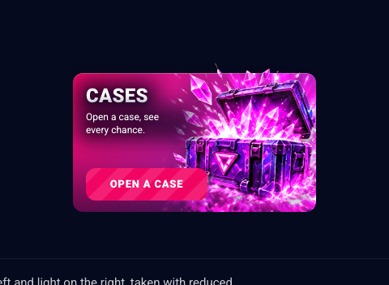
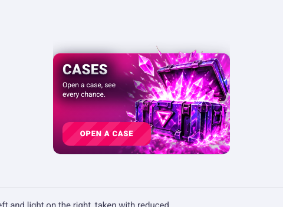

Cases
Open a case, see every chance.
Open a caseOne way to play, on Home: its colour, its art breaking the card's top edge, the name, one line, and the act across the foot. Live, the act is a filled Button; not launched, the Button is absent and a glass plate says so in its place (D-27, D-197). Everything on this page is drawn by design/system/components/mode-card.css through index.css.
Open a case, see every chance.
Open a caseOpen against someone, highest total wins.
Not launched yet
| Part | Class or element | What to change there |
|---|---|---|
| The card (the molecule's own) | .mode-card, --cases, --battles, --showdowns, --upgrade | the mode's colour and the placement of its art (--ol, --ot, --ow, --bz, --mx, --my, --pw, in units of 1% of the card); the 7 to 4 shape; how far the art may break the top edge (--mode-rise) |
| The art (the molecule's own) | .mode-card__art and the card's ::before and ::after | three layers: a burst on the card's colour, the object floating over the top edge, a thinner copy of the burst at its rim; the pictures are the --art-mode-* of art.css |
| The words (the molecule's own) | .mode-card__name, .mode-card__line | white on the colour, with a soft shade under them where the art runs behind (D-255); the name in capitals at 900 |
| The live act | a Button, .button--primary .button--m wearing .mode-card__act | only where the card puts it: across the foot, at least 56% of the card wide, its sides the small button's 14px as kit.css draws them; the Button is the atom's and keeps its states |
| The not-launched plate (the molecule's own) | .mode-card__later, with .is-later on the card | the pale glass plate in the Button's place; a card that is not launched says so in words and carries no act (D-27) |
The step-2 inventory listed a Media slot and a Badge under what this card contains (corrected at D-265). Home's markup holds neither: the art is the card's own layers and the not-launched plate is its own element, so this page names only the Button. Put to the gate.
Three axes. Each carries its rule, so the next screen picks by the rule instead of finding a reason again.
--fit (the explicit --stack, which no page or script set, was deleted at step 6, D-269): stacked where the row is narrow, side elsewhere.Open a case, see every chance.
Open a caseOpen against someone, highest total wins.
Not launched yet
One round, one opponent.
Not launched yet
Trade a skin for one worth more.
Not launched yet
--fit in a 160px Mode rowOpen a case, see every chance.
Open a caseOpen against someone, highest total wins.
Not launched yet
One round, one opponent.
Not launched yet
Trade a skin for one worth more.
Not launched yet
--fit is the stacked form on a condition: it applies inside a container named mode-row when that container is up to 515px wide or between 624px and 991px. This sample stands in a 340px container declared on this page for the purpose; the real container belongs to the Mode row, an organism.
Open a case, see every chance.
Open a case| Form | Measured |
|---|---|
| Side, in a 300px cell | |
| Stacked, in a 160px cell |
A way to play, offered as one of a row: Home's "Ways to play". A mode that is not launched is still drawn, in its colour and with its line, and says "Not launched yet" in the plate where the act would be, so the structure the baseline validated stays whole and a person never meets a dead button (D-27, D-197). The line says what the mode is in one sentence, the act says what the press does: "Open a case, see every chance." and "Open a case" (microcopy 0.4-15, 0.4-16).
A mode in the Ways to play row: Cases live with its act, the other three with the plate. A fifth mode is a new modifier with its colour and its art, never a different card.
A case to open, with its price and its risk, is the Case tile. A daily or a timed offer is the Daily ladder or the Event banner. A destination in the rail is a row of the rail, not a card. A press that does something stays a Button; the card places one and never draws its own.
Live at rest, on this page's theme: point at the card. The act inside is the Button and answers with the Button's own hover, focus and press (its page); the card has no focus state of its own, it is not a link.
Open a case, see every chance.
Open a caseSnapshots of the same instance, dark on the left and light on the right, taken with reduced motion so each shows the face the state settles on. Shot once, on Cases.


--depth-mode-card, --depth-mode-art--motion-mode-float and --motion-mode-burst; both stop with reduced motion.node design/kit/tools/shoot-states.js http://localhost:8765/ mode-card # re-shoot after a change to mode-card.css or its tokens node design/kit/tools/shoot-states.js http://localhost:8765/ mode-card --check # step 9: fails if a snapshot drifted
| Token | Kind | Dark | Light |
|---|
Read live from tokens.css. No component token. The four cards' colours, their depth and the words' ink are roles; a mode card is a coloured plate, so its words keep their white in both themes. Eight colour primitives are read directly, all in this block only and waiting for step 9: --gradient-mode-foot, --shadow-mode-art-warm, --shadow-mode-knife, --shadow-mode-name, --shadow-mode-line, --color-mode-later, --shadow-mode-later, --color-mode-scrim. Geometry, type and motion come straight from the primitives.
File: design/system/components/mode-card.css, loaded by design/system/index.css in the molecules' group.
<article class="mode-card mode-card--cases mode-card--fit"><span class="mode-card__art" aria-hidden="true"></span> <h3 class="mode-card__name">Cases</h3><p class="mode-card__line">Open a case, see every chance.</p> <a class="button button--primary button--m mode-card__act" href="...">Open a case</a></article> <article class="mode-card mode-card--battles mode-card--fit is-later">...<p class="mode-card__later">Not launched yet</p></article>
Stands on: Home. Until step 8 that screen still reads kit.css; step 6 moves its markup onto this file's forms.